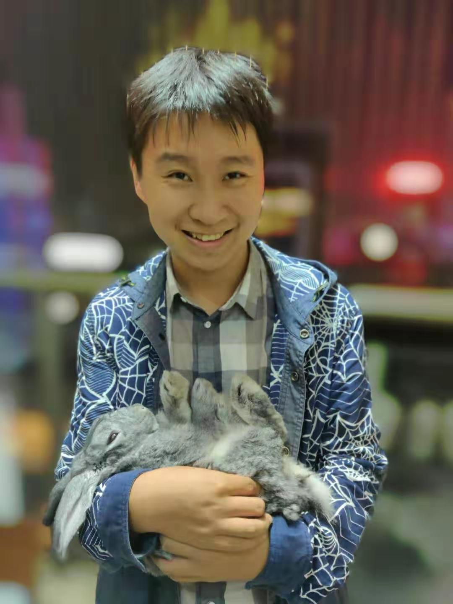

MSc Candidate, PAMI Lab
School of Electronic Information and Electrical Engineering
Shanghai Jiaotong University, China
Email: geron762@sjtu.edu.cn;
ygu@sei.xjtu.edu.cn
|  | Yun Gu |
|
|
MSc Candidate, PAMI LabSchool of Electronic Information and Electrical EngineeringShanghai Jiaotong University, ChinaEmail: geron762@sjtu.edu.cn;ygu@sei.xjtu.edu.cn |
| ||
Currently I am PhD Candidate and a member of PAMI Lab, led by professor Jie Yang. Before that, I received
my MSc. degree in Shanghai Jiao Tong University in June 2015 and BSc. degree in Xi'an Jiaotong University in June 2013.
(Here's the link of My CV)
Experience: My current research interests mainly include Machine
Learning ,Image Annotation and Medical Image. More specifically, I am
interested in: Image annotation and retrieval based on visual and textual information Community detection on semantic networks Smart grid security(Currently not in research~) Selected
Works
Image Processing and Recognition
Yun Gu, Xueming Qian, Qing Li, et.al. "Image Annotation by Latent Community Detection and Multiple Kernel Learning ".
IEEE Transactions on Image Processing, 2015
Yun Gu, Haoyang Xue, Jie Yang, et.al. "Cross-modality Hashing with Partial Correspondence". in IEEE International Conference on Image Processing (ICIP), 2015.
Shuai Huang, Yun Gu, Jie Yang, et.al. "Reranking of Person Re-identification by Manifold-based approach". in IEEE International Conference on Image Processing (ICIP), 2015.
Shaoyong Jia, Shijie Geng,Yun Gu, et.al. "NSLIC: SLIC Superpixels Based on Nonstationary Measure". in IEEE International Conference on Image Processing (ICIP), 2015.
Yun Gu, Haoyang Xue, Jie Yang, et.al. "Automatic Image Annotation Exploiting Visual and Textual Saliency". in 21st International Conference on Neural Information Processing (ICONIP), 2014.
Wei Liu, Haoyang Xue, Yun Gu, et.al. "Shape Preserving RGB-D Depth Map Restoration
". in 21st International Conference on Neural Information Processing (ICONIP), 2014.
Qing Li, Yun Gu and Xueming Qian. "LCMKL: Latent-community and multi-kernel learning based image annotation".
In ACM International Conference on Information and Knowledge Management (CIKM), 2013.
Smart Grid Application and Security:
Yun Gu, Ting Liu, Dai Wang, Xiaohong Guan and Zhanbo Xu. "Bad Data Detection Method for Smart Grid Based on
Distributed State Estimation".In IEEE International Conference on Communications (ICC), 2013.
Ting Liu, Yun Gu, Dai Wang and Yuhong Gui. "APSE: A Novel Method to Detect Bad Data
Injection Attack in Smart Grid". In INFOCOM, 2013.
Dai Wang, Xiaohong Guan, Ting Liu, Yun Gu and Yanan Sun. "A Survey on Bad Data Injection in Smart Grid".
IEEE Asia-Pacific Power and Energy Engineering Conference (APPEEC),2013.
Dai Wang, Xiaohong Guan, Ting Liu , Yun Gu, et.al. "EDSE: A Detection Method Against Tolerable False Data
Injection Attack in Smart Grid".
, Energies 2014, 7(3), 1517-1538;
Honor of Outstanding Graduate Student of Xi'an Jiaotong University, 2013; Best Bachelor Graduation Thesis of Xi'an Jiaotong University (Top 1%),2013; Meritorious Winner of Mathematical Contest in Modeling (MCM), 2013 National Postgraduate Mathematical COntest in Modeling (GMCM), First Prize (Top 2%), 2014 Windows Programming (CS417), 2014 Spring C++ Programming and Design(CS048), 2014 Fall Paper Reviewer: Pervasive and Mobile Computing (PMC), 2014- Last update:2015-5-30
Mail:
Yun Gu
Office:
ROOM:2-227, School of Electronic Information and Electrical Engineering
Shanghai Jiaotong University, No.800 Dongchuan Road,
URL:
http://www.pami.sjtu.edu.cn/people/~ygu/
Shanghai 200240, China
Email:
ygu.sjtu@gmail.com, geron762@sjtu.edu.cn